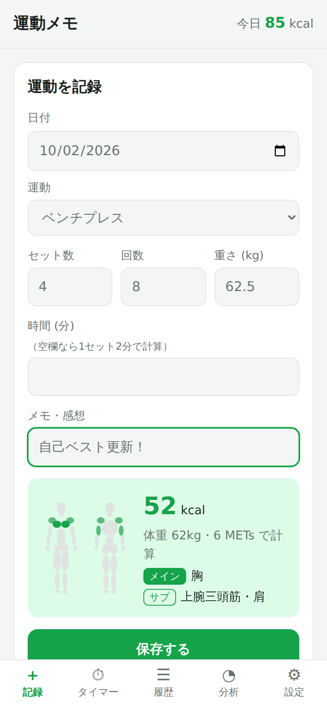
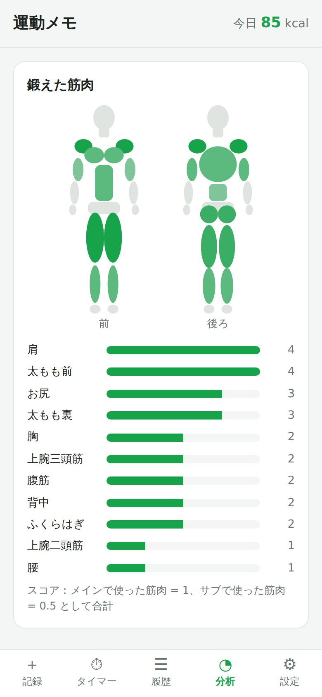
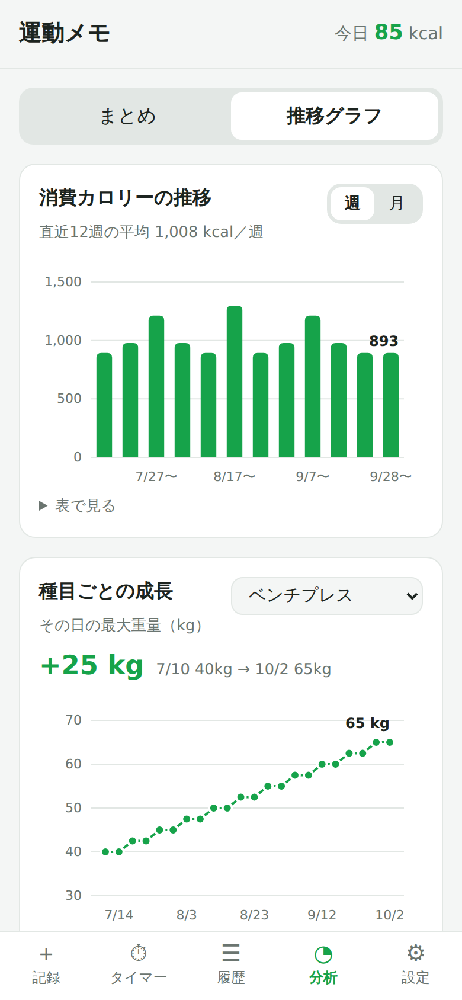
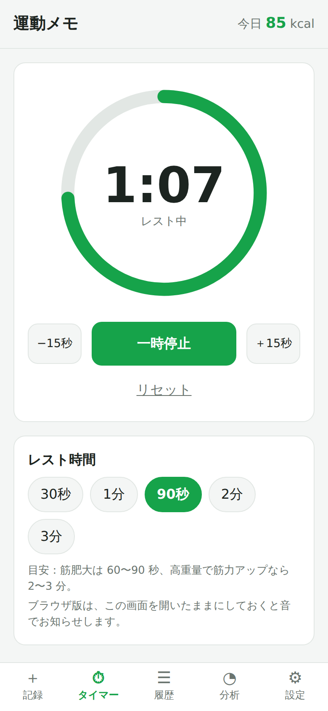
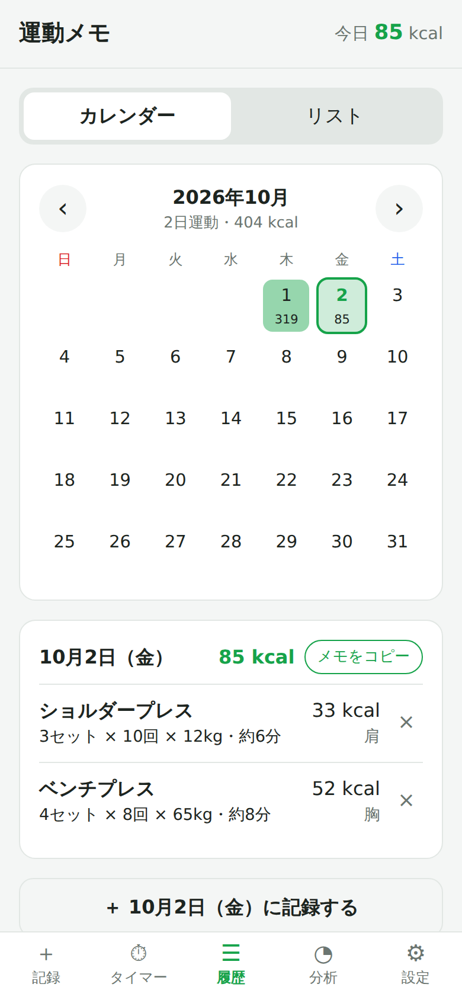

記録するだけで、
鍛えた筋肉が
ひと目でわかる。
運動の内容を入れると、消費カロリーと使った筋肉を自動で表示。
レストタイマーや成長グラフも、これひとつで。

続けたくなる、見える化
頑張りが目に見えると、運動はもっと楽しくなります。
どこを鍛えたか、
人体図でひと目でわかる
記録した運動から、使った筋肉を自動で判定。よく鍛えた部位ほど濃く色が付きます。
- 前・後ろの両面から、11 の部位を表示
- 今日・7日間・30日間で切り替え
- 「まだ鍛えていない部位」もお知らせ

成長がグラフで見える
種目ごとの最大重量や回数、運動時間の変化を折れ線グラフで。週ごと・月ごとの消費カロリーもわかります。
- 「+25kg」のように、最初からの伸びを大きく表示
- 重さ・回数・時間を種目に合わせて自動で選択
- グラフをタップすると、その日の値を表示

レストタイマーで、
インターバルも正確に
セット間の休憩時間をワンタップで計測。終わったら通知と振動でお知らせします。
- 30秒〜3分のプリセットと ±15 秒の調整
- アプリを閉じていても終了を通知
- 他の画面でも残り時間を表示

カレンダーで振り返る
運動した日に色が付き、消費カロリーも表示。日付をタップすると、その日の記録と感想を見られます。
- その日の運動をメモとしてコピー（SNS やメモアプリへ）
- 記録し忘れた日も、あとから追加できる
- 月ごとの運動日数と合計カロリー

ほかにも、うれしい機能
消費カロリーを自動計算
運動の強さ（METs）と体重から、消費カロリーの目安を計算します。
26 種類の運動に対応
ランニングや水泳から、ベンチプレス・スクワットなどの筋トレまで。
メモ・感想を残せる
調子や場所、その日の気分も一緒に記録できます。
データは端末の中だけ
アカウント登録は不要。記録がサーバーに送られることはありません。
バックアップも簡単
記録をファイルに書き出して、「ファイル」アプリなどに保存できます。
ダークモード対応
iPhone の設定に合わせて、夜でも目にやさしい表示に。
あなたの記録は、あなたの iPhone の中だけに
運動メモは、記録や体重を外部のサーバーに送信しません。広告や行動分析のためのツールも使っていません。 プライバシーポリシーを読む
よくある質問
無料で使えますか？
はい、無料で使えます。アカウント登録も必要ありません。
Android でも使えますか？
現在は iPhone 版のみです。
消費カロリーはどうやって計算していますか？
「METs（運動の強さ）× 体重(kg) × 運動時間(時間) × 1.05」という、厚生労働省の運動指針などで使われている簡易式で計算しています。 体格や運動の強さによって実際の値とは異なるため、目安としてご利用ください。
記録はどこに保存されますか？
お使いの iPhone の中に保存されます。アプリを削除すると記録も消えるため、ときどき「設定 → 書き出し」でバックアップを取っておくと安心です。
機種変更のときはどうすればいいですか？
古い iPhone で「設定 → 書き出し」をしてファイルを保存し、新しい iPhone で「設定 → 読み込み」からそのファイルを選ぶと、記録を引き継げます。
通知の許可は必要ですか？
レストタイマーの終了を、アプリを閉じているときにもお知らせするために使います。許可しなくても、タイマーや記録などの機能は使えます。